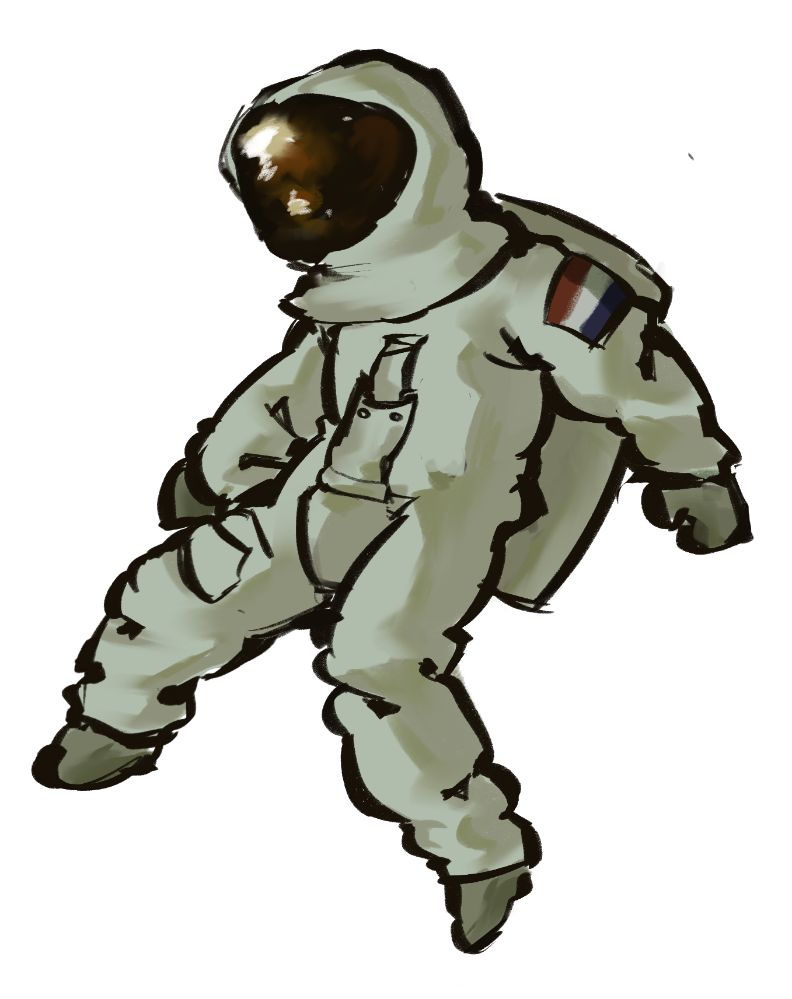
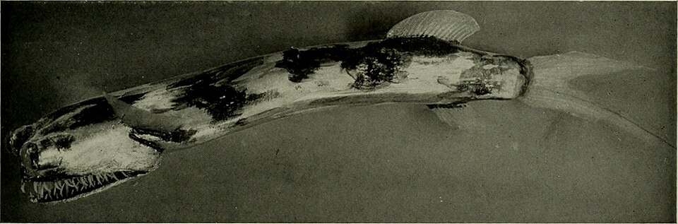
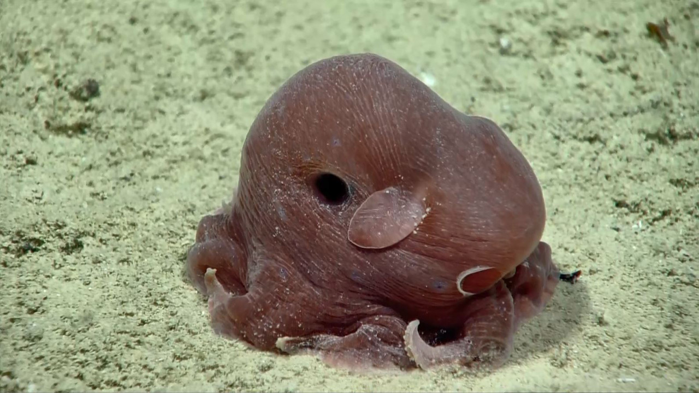
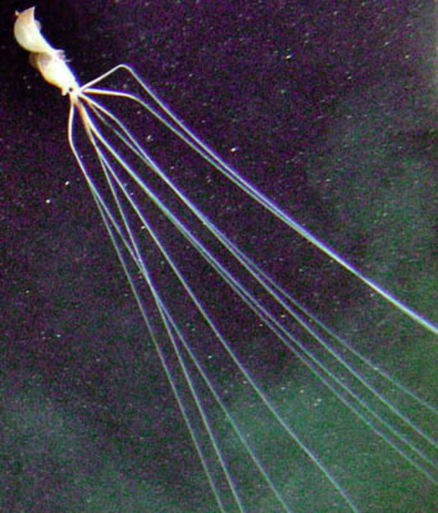

Ik heb de diepzee altijd erg facinerend gevonden, er is weinig bekend
over de dieren die hier leven, door de extreme omstandigheden zijn ze
erg apart geevolueerd. Zelf vind ik het een beetje buitenaards.
Op deze site kan je de dieren die hier leven ontdekken door op ze te
klikken.
Privacy verklaring
Op deze site wordt een onbekend script van een derde partij gebruikt.
Als u hier niet mee instemt dan adviseer ik u om deze site te
verlaten.

de telescopefish (Gigantura)
Deze engerds komen vooral voor in tropische wateren zo'n 200 tot 5000
meter diep. Ze hebben ook geen geslacht en hebben zowel mannelijke als
vrouwelijke voortplantingsorganen. Door hun unieke kaak zonder normale
botten kunnen ze prooi groter dan hun eigenichaam eten. Dit is voor
een lege plaats als de diepzee wel heel handig.

credit: American Museum of Natural History
De dumbooctopus
De dumbooctopus kan gevonden worden op de oceaanvloer, op een diepte
van ongeveer drieduizend tot verduizend meter diep. Ze gebruiken hun
oren om vooruit te komen. En het dieet van deze octopus bestaat uit
oesters, slakken, wormen en schaaldieren die langs de oceeanvloer
drijven. Om roofdieren te vermijden kunnen ze ook van kleur
veranderen, maar gelukkig zijn er daar op de zeebodem niet veel van.
Op hun zuignappen bevinden zich draadachtige structuren om zo beter
hun prooien te kunnen vangen en naar hun mond kunnen brengen.

credit: NOAA Ocean Exploration, 2019 Southeastern U.S. Deep-sea
Exploration
De bigfinsquid
Zoals veel diepzeedieren is er weinig over deze vissen bekend. Volgens
het artikel Global distribution and depth of the Bigfin squid
Magnapinna spp zijn er in totaal 46 waarnemingen van dit dier geweest.
Met 19 van deze waarnemingen beschreven door wetenschappers. Gebaseerd
op deze waarnemingen is er vastgesteld dat deze vissen tussen de 1578
en 6212 meter leven. Ze kunnen langer dan 6 meter lang worden, deze
lengte bestaat vooral uit hun armen en tentakels. Volgens NOAA ocean
exploration was de langst gespotte bigfin squid 6.4 meter lang met 6.1
meter die uit deze armen en tentakels bestonden. Wetenschappers hebben
officieel 3 soorten bigfin squid gecategoriseerd.

De diepzeehengelvis (Ceratioidea)
Er zijn meer dan 200 soorten hengelvissen. Ze leven vooral in de
Arctische en Atlantische oceaan, tussen de 300 en 4000 meter diep. De
meeste worden ongeveer 30 cm, maar sommige zijn langer dan 1 meter.
Vooral hun lichtje boven hun kop valt op: een soort vishengel met
lichtgevende bacteriën waarmee ze prooi lokken. Alleen vrouwtjes
hebben dit. Net als de telescopefish (Gigantura) kunnen ze prooi eten
die twee keer zo groot is als zijzelf.
De mannetjes zijn veel kleiner en zoeken hun hele leven naar een
vrouwtje. Bij sommige soorten bijt een mannetje zich vast en smelt hij
samen met haar huid en bloedomloop. Hij verliest dan zijn ogen en
bijna al zijn organen, behalve de testikels. Een vrouwtje kan 6 of
meer mannetjes dragen.
De Phantom jellyfish
De phantom jellyfish (Stygiomedusa gigantea) is een van de grootste
kwallen ter wereld, maar je ziet hem bijna nooit. Hij komt voor in
bijna alle oceanen, op een diepte van ongeveer 500 tot ruim 6000
meter. Zijn klokvormige lijf kan wel een meter breed worden.
In plaats van tentakels heeft hij vier lange, dikke armen die op
linten lijken. Die kunnen meer dan 10 meter lang worden. Hiermee vangt
hij zijn prooi, die hij daarna naar zijn mond brengt. Er zijn tot nu
toe maar ruim honderd waarnemingen van deze kwal geweest, daarom is er
nog weinig over hem bekend. Soms schuilen er kleine vissen tussen zijn
armen. (geschreven door Claude)